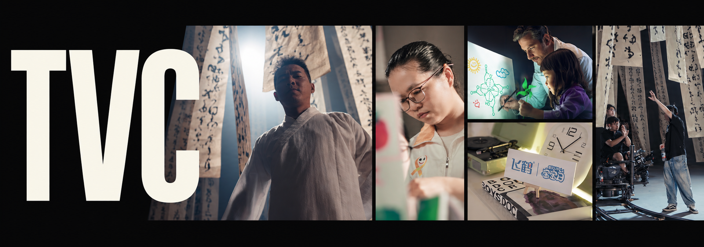
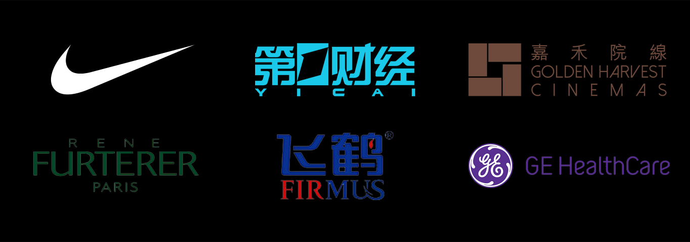

TVC / Commercial work / 2022—2025
Stories for brands.
From the first production plan to the final frame. Selected work in producing, assistant direction, editing, color and sound.
让品牌故事落在真实的人与画面里。
从制片、现场协作，到剪辑、调色与声音。

04 / Selected projects
Commercial films.
Explore each production through its brief, my role, project stills and original viewing links.

Across the production
Production.
Editorial. Finish.
Producing & assistant direction
On-set editing
Editing & motion-graphics coordination
Color grading & sound